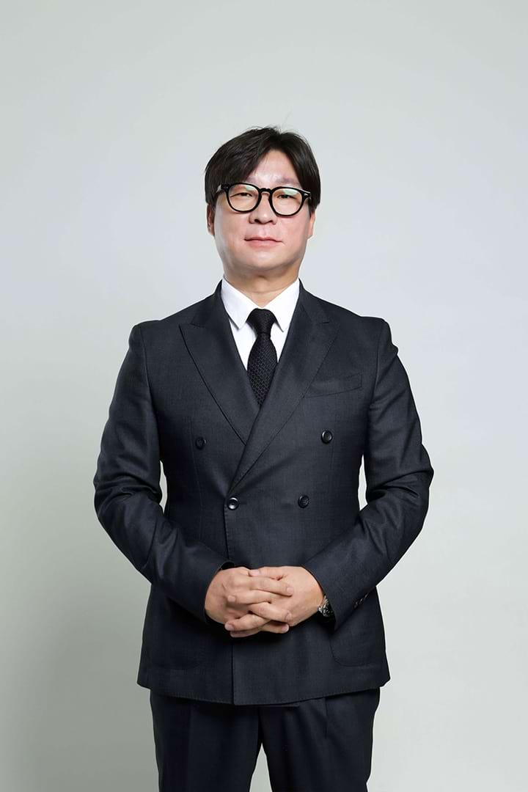

The past and the future
CEO Message
Greeting

Greetings,
Welcome to
PT. Networks Indonesia Aku (NIA),
It gives me great pleasure, as CEO, to
welcome you to join us on our path to
information technology excellence. PT
Networks Indonesia Aku aims to lead the
way in the IT field by emphasizing
“integration” and “innovation”.
NIA, a South Korean-based subsidiary of
Samchully Networks, intends to establish
itself as a prominent IT company in
Indonesia by 2021, emphasizing
eco-friendly products and services. NIA
is committed to developing technology
for the following industries: smart
manufacturing, online payment systems,
health, education, logistics, and
transportation and infrastructure. We
achieve this balance by emphasizing
innovation, excellent customer service,
and state-of-the-art technological
solutions in our purpose.
To ensure that it is possible for NIA to
continue to be a top provider of IT
solutions and a dependable partner, we
are committed to establishing solid
connections with all stakeholders as we
work to advance the field of information
technology.
Thank you for your trust and support.
Through “innovation” and “integration”,
let's work together to build a bright
future for the information technology
field.
CEO PT. Networks Indonesia Aku
Son Dong-kwon
